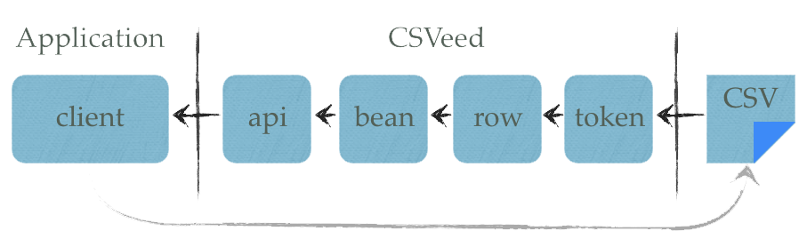
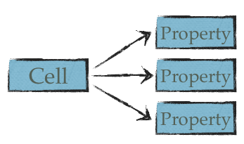

Design Choices
- Tokenizer; why build the tokenizer the way you did?
- v1.0.0; why not make a v1.0.0 immediately?
- Spring; why use Spring?
- Writer; why is there not a CsvWriter?
- Architecture; why have the layering of CSV and not roll all into one layer?
- Error feedback; what is your thing with error feedback?
- Facade; why the Facade?
- Deep conversion; will CSVeed have deep conversion in due time?
- Splits and joins; will CSVeed have splits and joins in due time?
Tokenizer
v1.0.0
I believe a version 1 must have seen some time in the trenches before it can be elevated to that position. That means people must have used it, it must have run stable in production software and in general it must have existed for some time. Software that is immediately released as version 1 is not to be trusted.
I am aware that this may hamper the attraction of CSVeed, but I think the community and the prestige of the software is better served if the practice of steadfast growth to maturity prevails over a false sense of stability.
Spring
This was one of the harder decisions to make. Spring gave the project a headstart because it offers great out-of-the-box functionality for converting String objects to Bean properties.
The functionality of Spring that is used has to do with BeanWrapperImpl. One can use this class to wrap around a bean and set/get its properties sending/receiving only String instances. Spring has a number of PropertyEditor classes it supplies, which currently powers its popular Spring MVC web framework.
However, the Spring dependency comes with a price. Both Spring Beans and Spring Core are included in the dependency tree. The library is commonly used in web applications, although, it is undesirable for libraries. Therefore, the Spring dependency will in time be replaced with an innate conversion ability.
Writer
The focus of CSVeed is first and foremost on reading of the CSV. Writing to CSV is literally an afterthought, since it is much easier to write from a realiable structure (such as a Java Bean) to an unreliable one (CSV).
CSVeed caters to those people that need to get a grip on their CSV. It is aimed at the group of people that have experienced that reading CSV implies dealing with errors. Writing to CSV is flawless by definition and therefore without challenge.
In the future, a CsvWriter will be added to CSVeed, but there is no hurry to realize this. Error feedback has a much higher priority.
Architecture
Error feedback
Dealing with the reading of CSV is synonymous to dealing with errors. The 'structure' of a CSV file leaves a lot to be desired – there is no file that says what it structure will be like with XML. Users can (and often do) change CSV at will before sending it off to an import job. Anyone having worked with CSV for a prolonged period of time knows that errors are part of the essence of CSV files.
Errors that happen during the parsing process, in any of the layers, can probably be traced back to an error in the original CSV. Therefore it is of paramount importance that the library reports back on the original error, not just the error that it it generates in a particular layer.
Also, errors that happen after the parsing process has completed, can probably still be traced back to the original CSV file. CSVeed can currently only report back on errors that it encounters itself. In the near future, it will be made so that clients can use the CSVeed context to refer back to the original CSV cell where the error occurred.
Facade
The Facade has been inspired by JavaCSV. This library has just two classes; a writer and a reader. Every bit of logic has been pushed into those two classes. It must be a nightmare to maintain those classes.
The user, on the other hand, is given a treat; it gets the simplest possible interface to interact with the library. The community has shown itself very enthousiastic over the simplicity of JavaCSV.
CSVeed takes a different route. The maintenance mess of just two classes has been evaded, while the user still gets a simple interface. The way this is done is by setting up a Facade that shields the underlying complexity.
Deep Conversion
...

Splits and Joins
...
